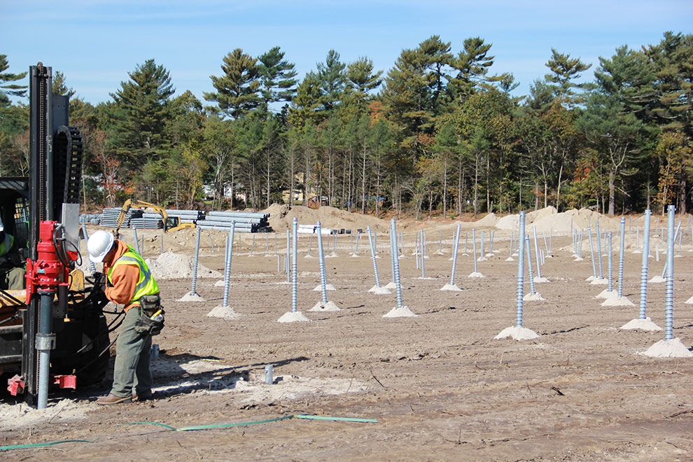
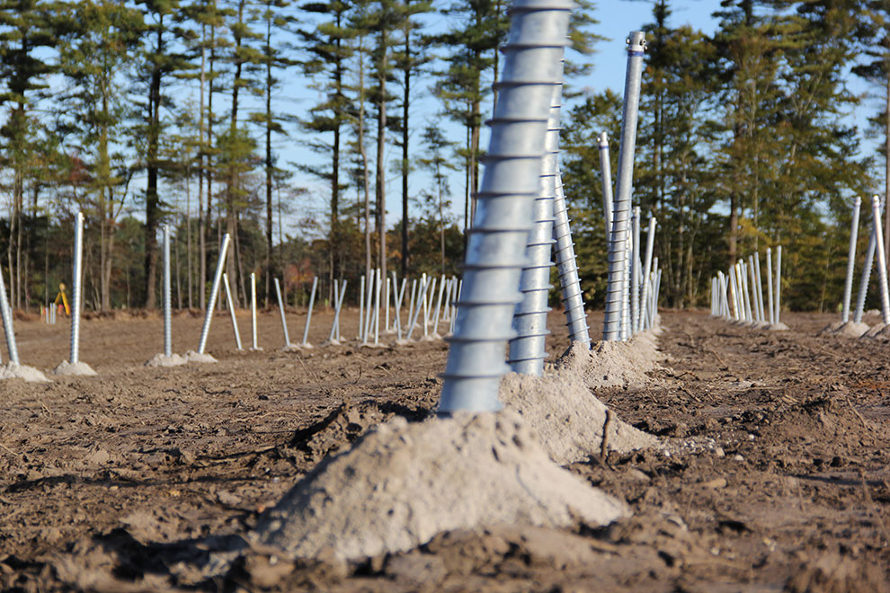

- 
- 
Ground screw based solar mounting systems eliminate the need for concrete and can be completed in minutes. This accelerated foundation method surpasses the time taken for convention installations which use concrete and in the process reduces the time taken for construction.
The ground screw solution is versatile , robust and can be used in various types of terrains including those involving sheet and soft rock. There is no requirem ent of water for construction and this enables ground screw deployment to be faster even in dry and harsh terrain, where solar plants are typically situated. The ground screw can also handle complex terrains in an elegant manner without the need for elaborate levelling.
We guarantee a reduction of installation time upto 50% ie., upto 11 days per MW and cost reduction of upto 20% . These improvisations also reduce lost generation by bringing the capacity on stream earlier. Back of the envelope estimation for generated units saved range between 42,000 – 45,000 Kwh for a MW installation.